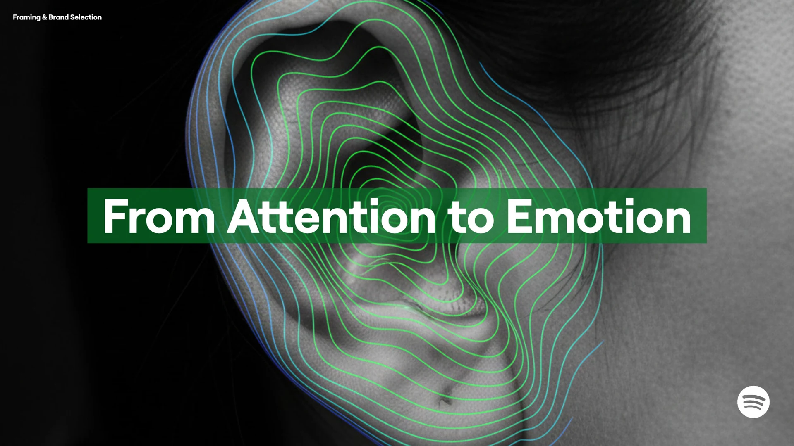

High trust / Low sensory
The Ethical Minimalist Era
A quieter digital future, where limited sensory experiences coexist with trust in how data is handled.
01 / SPOTIFY 2035
What happens when a music platform can shape how we feel? A six-week exploration of Spotify’s possible futures, and the role of trust in 2035.
An independent educational project exploring Spotify as a case study. The scenarios and strategy are speculative, developed by our team.

02 / THE QUESTION
Our starting question was: how will algorithms influence identity and emotion? We explored what this could mean for Spotify by 2035, imagining a future where audio experiences become more sensory and personal.
The tension was both technological and human. If a platform could respond to our emotional state, would we experience that as support, intrusion or manipulation? We used alternative futures to examine what might make the difference.
03 / THE APPROACH
We moved from signals of change to contrasting futures, then used those futures to question strategic choices.
With the Futures Triangle, we explored the push of AI-generated content, the pull of digital wellbeing, and the barriers around trust and data ethics.
Signals, the Futures Wheel and STEEP helped us discuss how technological change could connect with human needs and wider systems.
We chose two critical uncertainties, created a scenario matrix and explored contrasting worlds through Aisha’s everyday life.
Through wind tunnelling, we examined where proposed choices could fail and what those risks meant for Spotify’s future role.
04 / FOUR POSSIBLE FUTURES
Two uncertainties shaped our matrix: the level of sensory experience and people’s trust in data ethics. Together, they opened up four possible futures.
Trust in data ethics: low to high
Sensory experience: low to high
Trust in data ethics
High trust
Low trust
Low sensory
High sensory
Sensory experience
High trust / Low sensory
A quieter digital future, where limited sensory experiences coexist with trust in how data is handled.
High trust / High sensory
Sensory technology becomes a trusted layer of everyday support, with people in control of their emotional data.
Low trust / Low sensory
Lost trust drives people away from digital experiences and towards meaning they create for themselves.
Low trust / High sensory
Immersive experiences expand while emotional data becomes a tool of influence and extraction.
Our scenario framework for 2035. These are exploratory worlds, not predictions. The two highlighted worlds were developed further through Aisha’s story.
05 / MAKING THE FUTURES HUMAN
We used Aisha, a parent and caretaker, to bring two opposing scenarios into everyday life. Her need for safety, connection and emotional support stayed familiar. The world around her changed.
Speculative scenario illustrations from the team’s final presentation.
06 / FROM SCENARIOS TO STRATEGY
Our proposed direction was a sensory platform grounded in wellbeing, ownership and trust, with people retaining control over their emotional data.
Our wind-tunnelling exercise exposed two risks: offering more content could fail in a world where people disengage, while extracting more biometric data could deepen the loss of trust. These tensions shaped our proposal.
Explore audio and multisensory experiences that support people’s emotional lives.
Defend the value of human creativity as AI-generated content expands.
Make emotional data use transparent and give people control over sharing and export.
Integrity is the new algorithm.
The central message of our final presentation.
Project output
A four-world scenario framework, two persona-led narratives and a strategic concept, brought together in our final team presentation.
07 / WHAT I TAKE FORWARD
My instinct is to move quickly from an idea to action. This project challenged me to pause, look at the forces around a problem and give other perspectives more space.
When the group slowed down, I practised listening instead of pushing an idea forward just to regain momentum. That helped me see uncertainty as something to work with, and reflection as part of making better decisions.
I want to bring that approach into building my own brand: noticing signals, questioning assumptions and exploring different directions before committing to one.
My reflection on the Future Scenarios project.